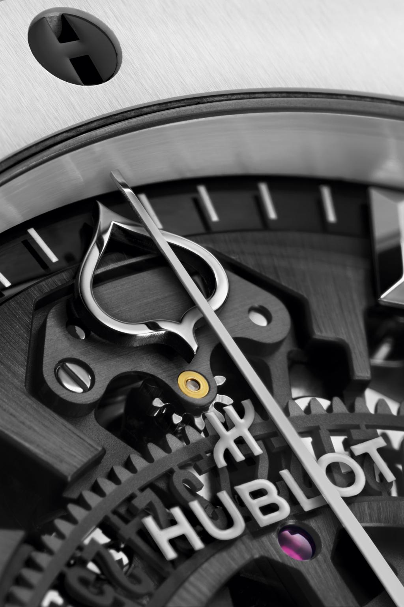

ASPEN SNOWMASS
Aspen Snowmass je enigma. Destinacija prožeta poviješću i zajednicom, također se kreće brzinom i privlači posjetitelje iz cijelog svijeta.
Teško je zaustaviti vrijeme u najikoničnijem i najpustolovnijem planinskom gradu u Americi, ali upravo su to danas postigli švicarski luksuzni proizvođač satova Hublot i Aspen Snowmass.
U čast 75. godišnjice Aspen Snowmass-a, Hublot: Službeni mjeritelj vremena Aspen Snowmass-a, započeo je 75. godišnjicu prije vremena, lansiranjem ograničenog izdanja komemorativnog sata.
Dizajniran u umjetničkoj suradnji, alpsko-bijeli skeletizirani sat preuzima kultni model Hublot Classic Fusion.
Ovo ograničeno izdanje od 30 komada izrađeno od crne keramike s bijelim keramičkim okvirom ima list drveta Aspen na drugoj ruci i sjajni titanij visokog sjaja, što je počast rudarskoj baštini Stjenjaka i grada Aspen.
Ograničenje je utisnuto na poleđini sata zajedno s prigodnim logotipom 75 godina: komad je pravi kolekcionarski predmet za 30 sretnika.